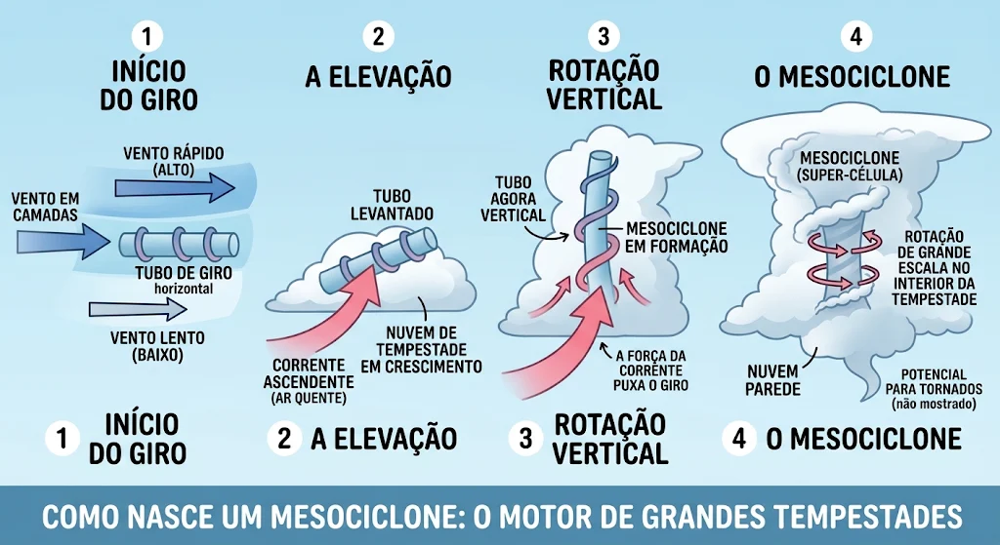

As supercélulas são verdadeiros monstros da natureza, e a maioria das vezes esse tipo nuvem foi a responsável por vários tornados marcantes. Além que as supercélulas duram mais que as cumulonimbus. Em média duram de 2 a 6 horas (em casos extremos de 8 a 12 horas).
Supercélula x Cumulonimbus
as duas nuvens são a mesma coisa?
Primeiramente é necessário compreender que as duas nuvens não são iguais, mesmo que elas sejam nuvens de tempestade, elas são diferentes.
Duração;
Cisalhamento vertical do vento;
Mesociclone.
(Toda supercélula é um tipo de nuvem cumulonimbus, mas nem toda cumulonimbus é uma supercélula.)
O cisalhamento do vento é a mudança brusca na velocidade, na direção do vento, ou em ambos, em uma curta distância na atmosfera.
Principais Tipos:
Cisalhamento Vertical:
Mudança na velocidade ou direção do vento à medida que se ganha ou perde altitude.
Cisalhamento Horizontal:
Mudança na velocidade ou direção do vento ao longo de uma distância lateral (geralmente próximo ao solo ou em frentes meteorológicas).

Curiosidades:
O mesociclone é o que realmente diferencia uma supercélula de uma cumulonimbus, uma supercélula e uma cumulonimbus podem possuir a mesma estrutura, mas somente a supercélula tem um mesociclone.
(Por causa do mesociclone que supercélulas duram tanto).
Organização:
A grande sacada da supercélula é que a chuva e o granizo não caem diretamente dentro da corrente ascendente principal (mesociclone). Como o ar sobe com extrema violência, ele joga a precipitação para os lados.
(Com essa organização que o mesociclone cria, impede que a tempestade se sufoque e se dissipe).